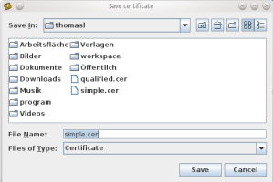

Save Certificate
This feature can be used to store the public certificates, which are deposited on the identity card, on your local machine. The functional range depends on the type and the status of the smartcard which is in use.
There are two certificates deposited on the identity card.
- Simple certificate
- Qualified certificate
The save-certificate operation is initiated by pressing the respective button.
You can choose the folder where the certificate should be stored. Subsequent to the folder selection, the save-certificate operation can be finished by pressing the 'Save' button or aborted by pressing the 'Cancel' button.
